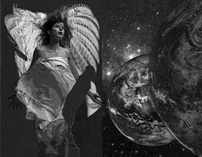

Projects
Exhibitions
Publications
Biography
Contact
Links
� 2005-2008
Website by D. Maisel
|
 View photographs Black Noise is a project initiated by Mai Thu Perret, John Armleder and Amy Granat in memory of the painter and musician Steven Parrino -- who died in a motorcycle accident on New Year's Day 2005. I admired Steve's artwork and always enjoyed talking with him when we ran into one another. We had planned to do a collaborative photo as part of my Who am I, What am I, Where am I? series. I regret that we did not have time to do that. I was also a fan of Electrophilia, the band he had with Jutta Koether. My comic book contribution to Black Noise derives from The Angel of History. Once, when I asked Steven to sign a copy of his book The No Texts, he took a bite out of one of the black pages. That is the last page in my comic book. |